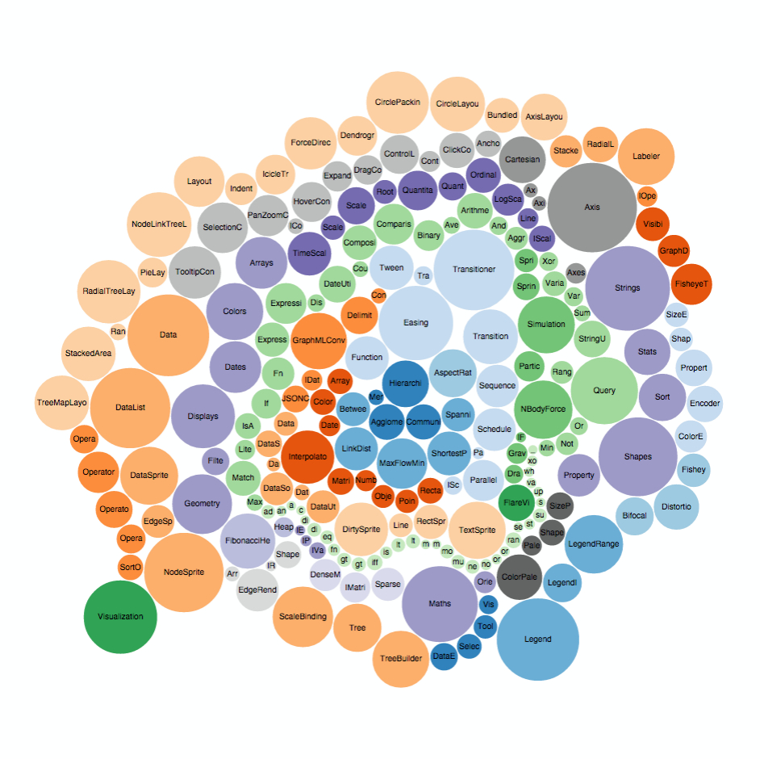

D3 Introduction

D3
- Data-Driven Documents
- JavaScript Library to manipulate data based documents
- Uses open web standards (SVG, HTML and CSS)
- Some data parsing
- Allows interaction with your graphs
What can you do with D3?
Bar Charts

Pie Charts

Bubble Charts
Choropleth

Azimuthal Projections

Dashboards

Algorithm Visualization

Interactive Infographics

Artistic visualizations

Funny Interactions
Koalas to the MaxWhat D3 Does
- Loads data
- Binds data to elements
- Transforms those elements
- Transitions between states on demand
D3 Advantages
- Based on attaching data to the DOM
- Styling of elements with CSS
- Same tools as FE development
- Transitions and Animations baked in
- Total control over our graphs
Pain points
- Update, Enter and Exit Pattern
- Scales and Axes
- Tooltips
- Data Manipulation
- Margins and dimensions
- Chaining
Workflow
- Idea or Requirement
- Search for example
- Adapt the code
- Add features
Standard D3 Examples
- By chart type: Christophe's Viau Gallery
- By D3 components: Mike Bostock's Block Explorer
Code Example
Bar Chart Example by Mike Bostock
Creating Container
var margin = {top: 20, right: 20, bottom: 30, left: 40},
width = 960 - margin.left - margin.right,
height = 500 - margin.top - margin.bottom;
var svg = d3.select("body").append("svg")
.attr("width", width + margin.left + margin.right)
.attr("height", height + margin.top + margin.bottom)
.append("g")
.attr("transform",
"translate(" + margin.left + "," + margin.top + ")");
Creating Scales and Axes
var x = d3.scale.ordinal()
.rangeRoundBands([0, width], .1);
var y = d3.scale.linear()
.range([height, 0]);
var xAxis = d3.svg.axis()
.scale(x)
.orient("bottom");
var yAxis = d3.svg.axis()
.scale(y)
.orient("left")
.ticks(10, "%");
Loads Data
d3.tsv("data.tsv", type, function(error, data) {};
function type(d) {
d.frequency = +d.frequency;
return d;
}
Draws Axes
x.domain(data.map(function(d) { return d.letter; }));
y.domain([0, d3.max(data, function(d) { return d.frequency; })]);
svg.append("g")
.attr("class", "x axis")
.attr("transform", "translate(0," + height + ")")
.call(xAxis);
svg.append("g")
.attr("class", "y axis")
.call(yAxis)
.append("text")
.attr("transform", "rotate(-90)")
.attr("y", 6)
.attr("dy", ".71em")
.style("text-anchor", "end")
.text("Frequency");
Draws Chart Bars
svg.selectAll(".bar")
.data(data)
.enter().append("rect")
.attr("class", "bar")
.attr("x", function(d) { return x(d.letter); })
.attr("width", x.rangeBand())
.attr("y", function(d) { return y(d.frequency); })
.attr("height", function(d) { return height - y(d.frequency); });
Result

Standard D3: Drawbacks
- Monolithic functions
- Chained method calls
- Hard to change stuff
- Impossible to reuse
Reusable API
- Encapsulated
- Decoupled
- Consistent
- Composable
Data Loader Test
describe('Initialization', function(){
it('defines a dataManager object', function(){
expect(demo.graphs.dataManager).toBeDefined();
});
it('can be called like a constructor', function(){
expect(typeof demo.graphs.dataManager).toBe('function');
expect(demo.graphs.dataManager()).toBeDefined();
});
});
Data Loader Test II
describe('Interface', function(){
beforeEach(function(){
dataManager = demo.graphs.dataManager();
spyOn(dataManager, 'on').and.callThrough();
});
it('triggers dataReady when data loaded', function(done){
var dataReadyHandler = function(result){
done();
};
dataManager.on('dataReady', dataReadyHandler);
dataManager.loadJsonData(fixturePath + 'dummyData.json', function(d){
d = d;
});
expect(dataManager.on).toHaveBeenCalled();
expect(dataManager.on).toHaveBeenCalledWith('dataReady', dataReadyHandler);
});
it('triggers dataError when data point fails', function(done){
var dataErrorHandler = function(result){
done();
};
dataManager.on('dataError', dataErrorHandler);
dataManager.loadJsonData(fixturePath + 'fake.json', function(d){
d = d;
});
expect(dataManager.on).toHaveBeenCalled();
expect(dataManager.on).toHaveBeenCalledWith('dataError', dataErrorHandler);
});
it('returns loaded data', function(done){
var newData;
dataManager.on('dataReady', function(result){
newData = result;
expect(newData).toHaveLength(12);
done();
});
dataManager.loadJsonData(fixturePath + 'dummyData.json', function(d){
d = d;
});
});
});
Data Loader Code
demo.graphs.dataManager = function module(){
var exports = {},
dispatch = d3.dispatch('dataReady', 'dataLoading', 'dataError'),
data;
d3.rebind(exports, dispatch, 'on');
exports.loadJsonData = function(_file, _cleaningFn){
var loadJson = d3.json(_file);
loadJson.on('progress', function(){
dispatch.dataLoading(d3.event.loaded);
});
loadJson.get(function (_err, _response){
if(!_err){
_response.data.forEach(function(d){
_cleaningFn(d);
});
data = _response.data;
dispatch.dataReady(_response.data);
}else{
dispatch.dataError(_err.statusText);
}
});
};
// If we need more types of data geoJSON, csv, etc. we will need
// to create methods for them
exports.getCleanedData = function(){
return data;
};
return exports;
};
Chart Test
Chart Code
Next Steps
Books


Tutorials
Reference
function linkify( selector ) {
if( supports3DTransforms ) {
var nodes = document.querySelectorAll( selector );
for( var i = 0, len = nodes.length; i < len; i++ ) {
var node = nodes[i];
if( !node.className ) {
node.className += ' roll';
}
}
}
}
Slides
Not a coder? Not a problem. There's a fully-featured visual editor for authoring these, try it out at http://slides.com.
Point of View
Press ESC to enter the slide overview.
Hold down alt and click on any element to zoom in on it using zoom.js. Alt + click anywhere to zoom back out.
Touch Optimized
Presentations look great on touch devices, like mobile phones and tablets. Simply swipe through your slides.
Fragments
Hit the next arrow...
... to step through ...
... a fragmented slide.
Fragment Styles
There's different types of fragments, like:
grow
shrink
roll-in
fade-out
current-visible
highlight-red
highlight-blue
Transition Styles
You can select from different transitions, like:
None -
Fade -
Slide -
Convex -
Concave -
Zoom
Themes
reveal.js comes with a few themes built in:
Black (default) -
White -
League -
Sky -
Beige -
Simple
Serif -
Night -
Moon -
Solarized
Slide Backgrounds
Set data-background="#dddddd" on a slide to change the background color. All CSS color formats are supported.
Image Backgrounds
<section data-background="image.png">Tiled Backgrounds
<section data-background="image.png" data-background-repeat="repeat" data-background-size="100px">Video Backgrounds
<section data-background-video="video.mp4,video.webm">Background Transitions
Different background transitions are available via the backgroundTransition option. This one's called "zoom".
Reveal.configure({ backgroundTransition: 'zoom' })Background Transitions
You can override background transitions per-slide.
<section data-background-transition="zoom">Pretty Code
function linkify( selector ) {
if( supports3DTransforms ) {
var nodes = document.querySelectorAll( selector );
for( var i = 0, len = nodes.length; i < len; i++ ) {
var node = nodes[i];
if( !node.className ) {
node.className += ' roll';
}
}
}
}
Code syntax highlighting courtesy of highlight.js.
Marvelous List
- No order here
- Or here
- Or here
- Or here
Fantastic Ordered List
- One is smaller than...
- Two is smaller than...
- Three!
Tabular Tables
| Item | Value | Quantity |
|---|---|---|
| Apples | $1 | 7 |
| Lemonade | $2 | 18 |
| Bread | $3 | 2 |
Clever Quotes
These guys come in two forms, inline:
“The nice thing about standards is that there are so many to choose from”
and block:
“For years there has been a theory that millions of monkeys typing at random on millions of typewriters would reproduce the entire works of Shakespeare. The Internet has proven this theory to be untrue.”
Intergalactic Interconnections
You can link between slides internally, like this.
Speaker View
There's a speaker view. It includes a timer, preview of the upcoming slide as well as your speaker notes.
Press the S key to try it out.
Export to PDF
Presentations can be exported to PDF, here's an example:
Global State
Set data-state="something" on a slide and "something"
will be added as a class to the document element when the slide is open. This lets you
apply broader style changes, like switching the page background.
State Events
Additionally custom events can be triggered on a per slide basis by binding to the data-state name.
Reveal.addEventListener( 'customevent', function() {
console.log( '"customevent" has fired' );
} );
Take a Moment
Press B or . on your keyboard to pause the presentation. This is helpful when you're on stage and want to take distracting slides off the screen.
Much more
- Right-to-left support
- Extensive JavaScript API
- Auto-progression
- Parallax backgrounds
- Custom keyboard bindings